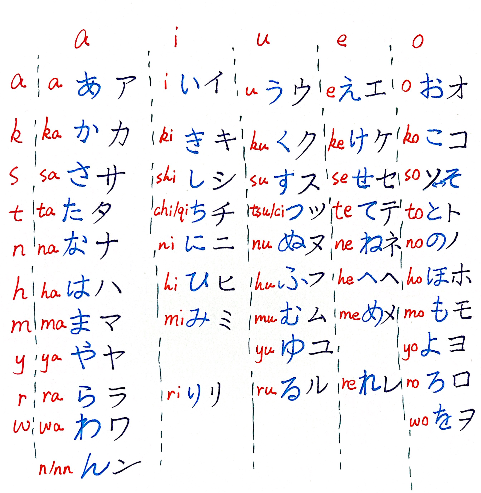

Japanese
1 五十音（ごじゅうおん）
1.1 清音（せいおん）
| あ段（あだん） | い段 | う段 | え段 | お段 | |
|---|---|---|---|---|---|
| あ行（あぎょう） |
あ/ア
a
|
い/イ
i
|
う/ウ
u
|
え/エ
e
|
お/オ
o
|
| か行 |
か/カ
ka
|
き/キ
ki
|
く/ク
ku
|
け/ケ
ke
|
こ/コ
ko
|
| さ行 |
さ/サ
sa
|
し/シ
shi
|
す/ス
su
|
せ/セ
se
|
そ/ソ
so
|
| た行 |
た/タ
ta
|
ち/チ
chi
|
つ/ツ
tsu
|
て/テ
te
|
と/ト
to
|
| な行 |
な/ナ
na
|
に/ニ
ni
|
ぬ/ヌ
nu
|
ね/ネ
ne
|
の/ノ
no
|
| は行 |
は/ハ
ha
|
ひ/ヒ
hi
|
ふ/フ
fu
|
へ/ヘ
he
|
ほ/ホ
ho
|
| ま行 |
ま/マ
ma
|
み/ミ
mi
|
む/ム
mu
|
め/メ
me
|
も/モ
mo
|
| や行 |
や/ヤ
ya
|
ゆ/ユ
yu
|
よ/ヨ
yo
|
||
| ら行 |
ら/ラ
ra
|
り/リ
ri
|
る/ル
ru
|
れ/レ
re
|
ろ/ロ
ro
|
| わ行 |
わ/ワ
wa
|
を/ヲ
wo
|
|||
| 特殊（とくしゅ） |
ん/ン
nn
|
||||
1.1.1 清音（せいおん））の手書き体（てがきたい）

1.2 濁音と半濁音（だくおん・はんだくおん）
| 段 | あ段 | い段 | う段 | え段 | お段 |
|---|---|---|---|---|---|
|
か行 清音 |
か/カ
ka
|
き/キ
ki
|
く/ク
ku
|
け/ケ
ke
|
こ/コ
ko
|
|
が行 浊音（だくおん） |
が/ガ
ga
|
ぎ/ギ
gi
|
ぐ/グ
gu
|
げ/ゲ
ge
|
ご/ゴ
go
|
|
さ行 清音 |
さ/サ
sa
|
し/シ
shi
|
す/ス
su
|
せ/セ
se
|
そ/ソ
so
|
|
ざ行 浊音（だくおん） |
ざ/ザ
za
|
じ/ジ
ji
|
ず/ズ
zu
|
ぜ/ゼ
ze
|
ぞ/ゾ
zo
|
|
た行 清音 |
た/タ
ta
|
ち/チ
chi
|
つ/ツ
tsu
|
て/テ
te
|
と/ト
to
|
|
だ行 浊音（だくおん） |
だ/ダ
da
|
ぢ/ヂ
ji
|
づ/ヅ
zu
|
で/デ
de
|
ど/ド
do
|
|
は行 清音 |
は/ハ
ha
|
ひ/ヒ
hi
|
ふ/フ
fu
|
へ/ヘ
he
|
ほ/ホ
ho
|
|
ば行 浊音（だくおん） |
ば/バ
ba
|
び/ビ
bi
|
ぶ/ブ
bu
|
べ/ベ
be
|
ぼ/ボ
bo
|
|
ぱ行 半浊音（はんだくおん） |
ぱ/パ
pa
|
ぴ/ピ
pi
|
ぷ/プ
pu
|
ぺ/ペ
pe
|
ぽ/ポ
po
|
1.2.1 濁音と半濁音（だくおん・はんだくおん）の手書き体（てがきたい）
2 発音（はつおん）
2.1 現代（げんだい）日本語（にほんご）の長音（ちょうおん）表記（ひょうき）
| 假名 | 罗马字 | 中文 |
|---|---|---|
| おかあさん | okaasan | 妈妈 |
| おばあさん | obaasan | 奶奶 / 外婆 |
| さようなら | sayounara | 再见 |
あ段一览
あ か さ た な は ま や ら わ が ざ だ ば ぱ
| 假名 | 罗马字 | 中文 |
|---|---|---|
| おにいさん | oniisan | 哥哥 |
| いいえ | iie | 不 / 不是 |
| ちいさい | chiisai | 小 |
い段一览
い き し ち に ひ み り ぎ じ び ぴ
| 假名 | 罗马字 | 中文 |
|---|---|---|
| くうき | kuuki | 空气 |
| すうがく | suugaku | 数学 |
| つうきん | tsuukin | 通勤 |
う段一览
う く す つ ぬ ふ む ゆ る ぐ ず づ ぶ ぷ
| 假名 | 罗马字 | 中文 |
|---|---|---|
| せんせい | sensei | 老师 |
| とけい | tokei | 钟 / 表 |
| おねえさん | oneesan | 姐姐（例外：え段＋え） |
え段一览
え け せ て ね へ め れ げ ぜ で べ ぺ
| 假名 | 罗马字 | 中文 |
|---|---|---|
| おとうさん | otousan | 爸爸 |
| とおい | tooi | 远（例外：お段＋お） |
| おおきい | ookii | 大（例外：お段＋お） |
お段一览
お こ そ と の ほ も よ ろ を ご ぞ ど ぼ ぽ
| 假名 | 罗马字 | 中文 |
|---|---|---|
| ケーキ | kēki | 蛋糕 |
| コーヒー | kōhī | 咖啡 |
| スーパー | sūpā | 超市 |
| 假名 | 罗马字 | 中文 |
|---|---|---|
| りゅう | ryuu | 龙 |
| ちゅうごく | chuugoku | 中国 |
| ひゃく | hyaku | 百 |
- あ段＋あ
（あ段：あ・か・さ・た・な・は・ま・や・ら・わ・が・ざ・だ・ば・ぱ）- おかあさん（okaasan）
- おばあさん（obaasan）
- さようなら（sayounara）
- おかあさん（okaasan）
- い段＋い
（い段：い・き・し・ち・に・ひ・み・り・ぎ・じ・び・ぴ）- おにいさん（oniisan）
- いいえ（iie）
- ちいさい（chiisai）
- おにいさん（oniisan）
- う段＋う
（う段：う・く・す・つ・ぬ・ふ・む・ゆ・る・ぐ・ず・づ・ぶ・ぷ）- くうき（kuuki）
- すうがく（suugaku）
- つうきん（tsuukin）
- くうき（kuuki）
- え段＋い（少数＋え）
（え段：え・け・せ・て・ね・へ・め・れ・げ・ぜ・で・べ・ぺ）- せんせい（sensei）
- とけい（tokei）
- おねえさん（oneesan） ← 例外＋え
- せんせい（sensei）
- お段＋う（少数＋お）
（お段：お・こ・そ・と・の・ほ・も・よ・ろ・を・ご・ぞ・ど・ぼ・ぽ）- おとうさん（otousan）
- とおい（tooi） ← 例外＋お
- おおきい（ookii） ← 例外＋お
- おとうさん（otousan）
- 外来語・擬音語：片仮名＋「ー」
- ケーキ（keeki）
- コーヒー（koohii）
- スーパー（suupaa）
- ケーキ（keeki）
- 拗音＋う（ゃ／ゅ／ょ のあとに う）
- りゅう（ryuu）
- ちゅうごく（chuugoku）
- ひゃく（hyaku）
- りゅう（ryuu）
3 音调（おんちょう）
Note
東京音（とうきょうおん）を基準にしています。
拗音（ようおん）・長音（ちょうおん）・促音（そくおん）・撥音（はつおん）も
いずれも 1 拍（はく）として数（かぞ）えます。
| 例詞（れいし） | 高低図（こうていず） | 助詞続き（じょぞくき） |
|---|---|---|
| さくら（桜） | L-H-H | ～が H |
| ひと（人） | L-H | ～を H |
| しんぶん（新聞） | L-H-H-H | ～で H |
| とうきょう（東京） | L-H-H-H | ～へ H |
| くうき（空気） | L-H-H | ～も H |
| ぎゅうにく（牛肉） | L-H-H-H | ～は H |
| かぞく（家族） | L-H-H | ～と H |
| くつした（靴下） | L-H-H-H | ～を H |
| おんがく（音楽） | L-H-H-H | ～が H |
| でんわ（電話） | L-H-H | ～に H |
| 例詞（れいし） | 高低図（こうていず） | 助詞続き（じょぞくき） |
|---|---|---|
| かさ（傘） | H-L | ～が L |
| はし（箸） | H-L | ～を L |
| きゃく（客） | H-L-L | ～も L |
| あめ（飴） | H-L | ～で L |
| ざっし（雑誌） | H-L-L | ～は L |
| エレベーター | H-L-L-L-L-L | ～が L |
| てんき（天気） | H-L | ～を L |
| くすり（薬） | H-L | ～に L |
| スプーン | H-L-L | ～で L |
| コップ | H-L | ～を L |
| 例詞（れいし） | 高低図（こうていず） | 助詞続き（じょぞくき） |
|---|---|---|
| やま（山） | L-H | ～が L |
| おちゃ（お茶） | L-H | ～を L |
| はな（花） | L-H | ～も L |
| くつ（靴） | L-H | ～で L |
| にほん（日本） | L-H-L | ～は L |
| おとうと（弟） | L-H-H-L | ～が L |
| あさごはん（朝ご飯） | L-H-H-H | ～を L |
| かばん（鞄） | L-H | ～が L |
| ふゆ（冬） | L-H | ～は L |
| まど（窓） | L-H | ～を L |
| 例詞（れいし） | 高低図（こうていず） | 助詞続き（じょぞくき） |
|---|---|---|
| おとこ（男） | L-H-H | ～が L |
| あおい（青い） | L-H-H | ～を L |
| すずしい（涼しい） | L-H-H-H | ～も L |
| かんがえる（考える） | L-H-H-H-L | ～で L |
| たのしい（楽しい） | L-H-H-H | ～が L |
| あつい（暑い） | L-H-H | ～を L |
| おもい（重い） | L-H-H | ～も L |
| ひろい（広い） | L-H-H | ～で L |
| きれい（綺麗） | L-H-H-H | ～が L |
| しんせつ（親切） | L-H-H-H | ～は L |
| 例詞（れいし） | 高低図（こうていず） | 助詞続き（じょぞくき） |
|---|---|---|
| とうきょうだいがく（東京大学） | L-H-H-H-H-L | ～は L |
| あたらしい（新しい） | L-H-H-H-H | ～が L |
| おべんとう（お弁当） | L-H-H-H-H | ～を L |
| かんこく（韓国） | L-H-H-H | ～が L |
| せんげつ（先月） | L-H-H-H | ～は L |
| らいねん（来年） | L-H-H-H | ～に L |
| 例詞（れいし） | 高低図（こうていず） | 助詞続き（じょぞくき） |
|---|---|---|
| めがね（眼鏡） | L-H-H-H | ～を L |
| かんごふ（看護婦） | L-H-H-H-H | ～が L |
| でんわちょう（電話帳） | L-H-H-H-H-H | ～を L |
| スーパー | L-H-H-H | ～で L |
| コンサート | L-H-H-H-H | ～が L |
| 例詞（れいし） | 高低図（こうていず） | 助詞続き（じょぞくき） |
|---|---|---|
| エレベーター | L-H-H-H-H-H-H | ～が L |
| パソコン | L-H-H-H-H-H | ～を L |
| あんぜん（安全） | L-H-H-H-H-H | ～が L |
3.1 追加練習（ついかれんしゅう）
以下の語も自分でアクセントを確認し、助詞を付けて声に出して読んでみましょう。
（数字は核位置を表す東京音型番号です）
- くうこう（空港）③ L-H-H-H ～が L
- ショッピング① H-L-L ～が L
- りょこう（旅行）⓪ L-H-H ～が H
- コンビニ② L-H ～が L
- べんとう（弁当）③ L-H-H ～が L
- きもの（着物）⓪ L-H-H ～が H
- スマホ② L-H ～が L
- わたし（私）① H-L ～が L
- あなた（貴方）② L-H ～が L
- ともだち（友達）④ L-H-H-H ～が L
Tip
同（おな）じひらがなでも意味（いみ）が変（か）わる例（れい）
箸（はし）①：筷子 橋（はし）②：桥
紙（かみ）②：纸 神（かみ）①：神
練習（れんしゅう）で意味を確認しながら声の高（たか）さを意識（いしき）しましょう！